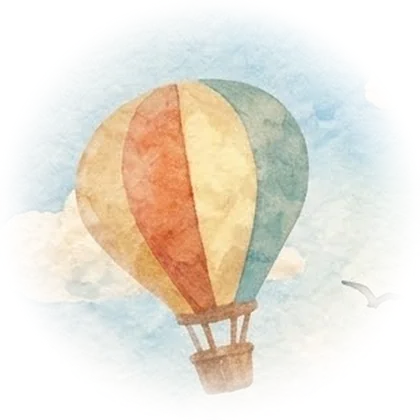
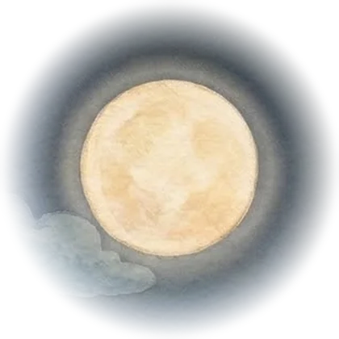
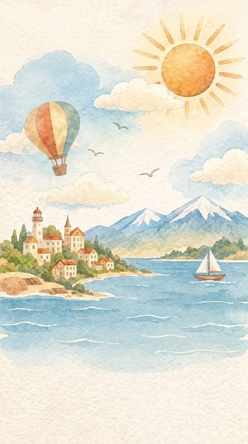
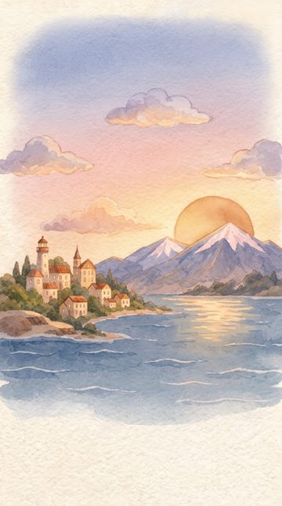
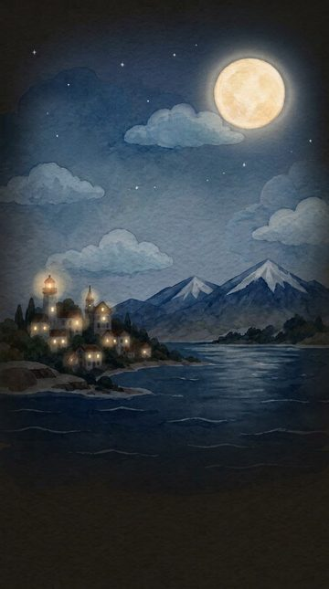
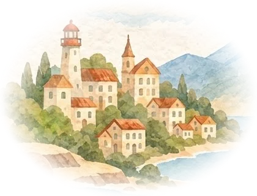
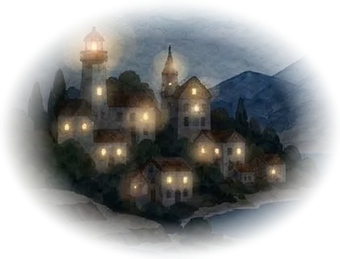
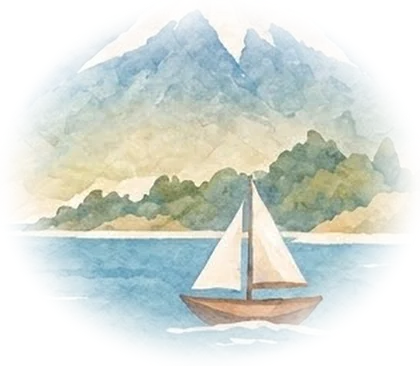
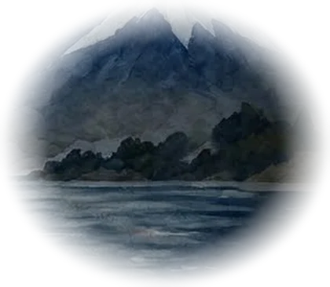

できること
01思いついたら、すぐ書きとめる
名前だけで保存できます。ほかのアプリの共有ボタンから、お店のページごと保存。Google マップの保存リストも、まとめて読み込めます。
02予定にして、忘れない
日付や「毎週日曜」のような繰り返しを決めると、近づいたら通知でお知らせ。週末の前には、行きたい場所の中からおでかけ先を提案します。ホーム画面のウィジェットで、次の予定まであと何日かも見られます。
03行ったら、思い出に
✓ を押すだけ。写真、★の評価、一緒に行った人を添えて、思い出になります。カレンダー、地図、フォルダで見返せます。
04振り返りを、たのしく
スライドショー、1 年の振り返り、写真を切り貼りして作る「思い出ボード」。写真は日付や場所の名前を入れてシェアできます。
05みんなで決める
「なかよしリスト」で、家族や友達と行きたい場所を集めて、♡ とひとことで相談。迷ったら、サイコロにおまかせ。行ったあとは、みんなの写真をひとつのアルバムに。
06時間で変わる、水彩の景色
画面の奥の景色は、昼・夕方・夜で変わります。開くたびに、少しだけ違う顔。





安心して使える
広告なし。
記録は端末と、あなたの iCloud にだけ保存されます。
開発者のサーバーには何も送られません。


Lun-Lun Plus
ほとんどの機能は無料で使えます。
Lun-Lun Plus は、一度の購入でずっと使える追加機能です。
| 無料 | Plus | |
|---|---|---|
| 記録・写真・カレンダー・地図 | ○ | ○ |
| iCloud 同期・広告なし | ○ | ○ |
| なかよしリストに参加 | ○ | ○ |
| なかよしリストを作る | 1 つ | いくつでも |
| 自分のフォルダ（思い出・行きたい・お気に入りそれぞれ） | 3 つ | いくつでも |
| 1 年の振り返り | 今年だけ | すべての年 |
| 振り返りを画像でシェア | — | ○ |
| スライドショー | 見るだけ | 動画で保存 |
| 写真シェアの飾り | シンプル | すべて（フレーム・日付スタンプ） |
| シェア画像の Lun-Lun の印 | 入る | 外せる |
| 思い出ボードの紙 | 無地・水彩紙 | すべて（クラフト紙・和紙・コルクボードなど） |
| 近くに来たら知らせる | — | ○ |
| テーマの色 | 朱 | 5 色から |
| 思い出のウィジェット（◯年前の今日） | — | ○ |
Lun-Lun Plus は買い切りです（日本では 400 円）。月額の料金はありません。
Saved places shouldn't stay saved.
A café you heard about, an exhibition, a town you want to visit. Lun-Lun keeps the places you want to go, turns them into plans, and, once you've been, keeps them as memories with your photos. What's ahead and what's behind you, in one notebook.
Jot it down the moment it comes to mind.
A name is enough. Save a page straight from another app's share button, or bring in your saved lists from Google Maps.
Make it a plan, and it won't slip away.
Set a date or a repeat, and Lun-Lun reminds you as it gets close. Before the weekend it suggests somewhere from your list, and a widget counts down to your next plan.
Been there? It becomes a memory.
One tap, then add photos, a rating and who you went with. Look back by calendar, map or folder.
Looking back, made fun.
Slideshows, a year in review, and a memory board you make by arranging photos on paper. Share photos with the date and the place's name.
Decide together.
Gather places with family and friends in a shared list, talk it over with hearts and short notes, or let the dice choose. Afterwards, everyone's photos go into one album.
A watercolor view that changes with the hour.
The scene behind the app turns from day to evening to night.
No ads. Your records stay on your device and in your own iCloud. Nothing is sent to the developer's servers.
Most of Lun-Lun is free. Lun-Lun Plus is a one-time purchase that adds more shared lists and folders, every year in review, slideshow video, all photo frames and board papers, nearby reminders, theme colors and a memories widget.